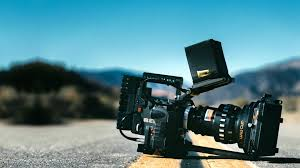
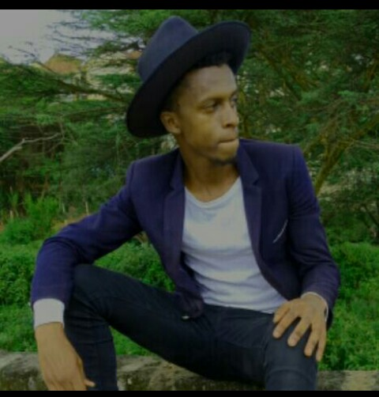

- Coding - I may say that I have diferent strength, when it comes to the world of IT I think that this is the area of my
calling, I developed the interest in coding and computer programming sometimes back. I got the interest from my good friend how has always been
holding my hand since I started this long journey of programming. I have done some projects and the other project that i did was about Derraphics tours.
- Music - This is another area that I have been doing for quite sometime now. I have been in the music industry for now a couple
of years. I do play a number of instruments ie Piano, Bass guitar, Drums and the Acoustic Guitar - Video & Photo Editing - I just started another small campany that deals with Videography and the Photograhy industry.
I have been doing this for nearly five years. I remember I used to be a camera operater in our church. I first started as camera assistance person, I used
to assista the camera guys in carrying cables and setting up the lights in the venue of the shoot, then i went on to a camera guy then to the main camera guy
then to the editing team and so on so forth - Graphic Designer - After graduating from being a camera man i went later joined the editing team where I developed alot of interest in the field
and that is where I started my life in Graphic designs.
This is one of the many ares that i see things are really working out well for me, I see a light at the end of the tunnel

this is one of my photos some years back
this is one of my photos some years back
